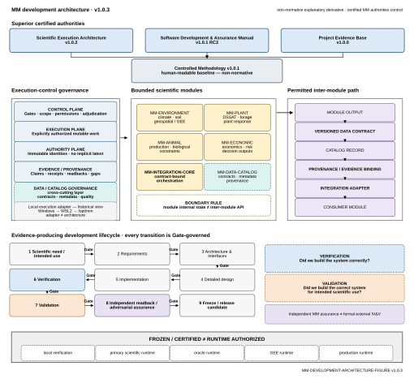

Development architecture figure¶
Version 1.0.3 documentary edition. This page is a source-bound editorial successor. Historical records and certified requirements are preserved; the published version 1.0.2 snapshot remains unchanged. This edition does not create scientific-runtime authority.
Figure version: 1.0.3
Status: independently closed publication asset · non-normative explanatory derivative
Independent closure: 22/22 PASS after targeted closure · 0 material findings
Generative-image AI: not used
Intended display: double-column / full-width (180 mm)
Authority boundary. This figure explains the controlled methodology; it does not supersede the certified Scientific Execution Architecture, Software Development & Assurance Manual, Project Evidence Base, or any runtime Gate.

Open full-size SVGDownload vector PDF
Figure 1 | Gate-governed scientific software development architecture of the Module Minimum (MM) system. The diagram separates certified authorities, the four-plane execution-control infrastructure, cross-cutting Data/Catalog governance, bounded scientific modules, the prescribed contract-mediated inter-module path, and the verification–validation–independent-assurance lifecycle. Runtime authorization is a separate controlled state. Version 1.0.3 preserves the v1.0.2 architecture while correcting PDF semantic-glyph fidelity and visibility of the already-defined inter-module arrowheads.
Independently closed publication-fidelity controls¶
- SVG/PDF semantic text mismatches: 0;
≠: SVG 4, PDF 4;→: SVG 2, PDF 2;- semantic
?substitutions in controlled labels: 0; - PDF fonts: embedded/subset CID TrueType Unicode;
- module-to-contract entry arrowhead: PASS;
- internal contract-chain arrowheads: 5/5 PASS;
- material text/arrow overlap: none observed;
- deterministic physical Build A = Build B = frozen candidate for SVG/PDF/PNG/manifest: PASS;
- Figure 1 closure: 22/22 PASS;
- NCS/Nature-facing profile: PASS_WITH_DECLARED_FONT_FAMILY_LIMITATION. This is an internal project manuscript-layout assessment under the declared font-family limitation, not an evaluation, endorsement, or acceptance by Nature Computational Science or any other journal.
Reproducibility and evidence¶
Disclosure boundary: approved figure generators and selected machine-readable source records are available in a separately versioned reproducibility supplement. Internal assurance receipts and historical records remain in the controlled private archive. Read the public evidence policy.
- Python generator (approved ZIP supplement)
- Vector SVG
- Vector PDF
- PNG fallback
- Exact-byte manifest (approved ZIP supplement)
- Alt textControlled record
- Figure legendControlled record
- Local QAControlled record
- Senior architecture / AI / NCS auditControlled record
- A/B determinism receiptControlled record
- Fresh targeted independent closure reportControlled record
- Fresh targeted independent closure resultControlled record


Expanded accessible description of Figure 1
Architecture diagram of the Module Minimum scientific software development system. Three certified authorities—the Scientific Execution Architecture v1.0.2, Software Development and Assurance Manual v1.0.1 RC3, and Project Evidence Base v1.0.0—converge on the non-normative controlled Methodology v1.0.1 baseline. The middle left contains the four-plane execution-control core and a separate cross-cutting Data/Catalog governance layer. Six bounded scientific modules occupy the center. A directed arrow enters the permitted inter-module path only at Module Output, and five visible downward arrows enforce Versioned Data Contract, Catalog Record, Provenance/Evidence Binding, Integration Adapter, and Consumer Module in order. The lower half shows the nine-stage Gate-governed lifecycle, distinct verification and validation, the statement that internal MM assurance is not formal external IV&V, and a separate runtime-authorization boundary stating that frozen or certified status is not runtime authorization.
Description preserved from the v1.0.3 figure's approved accessibility source; its reference to the v1.0.1 methodology baseline is historical. The figure remained unchanged in the published v1.0.2 predecessor and in this v1.0.3 documentary edition.
Publication boundary¶
This page is a documentation projection only. It does not authorize scientific, DSSAT, GEE, Sobol, production runtime, GitHub Pages activation, or journal submission.